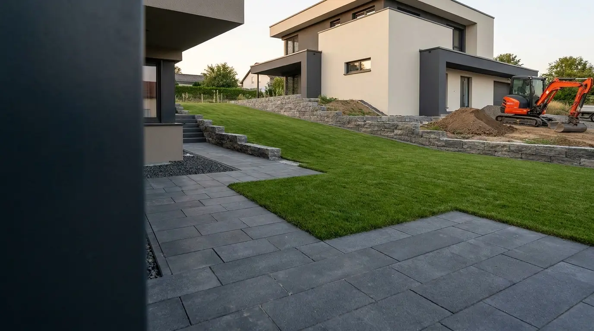
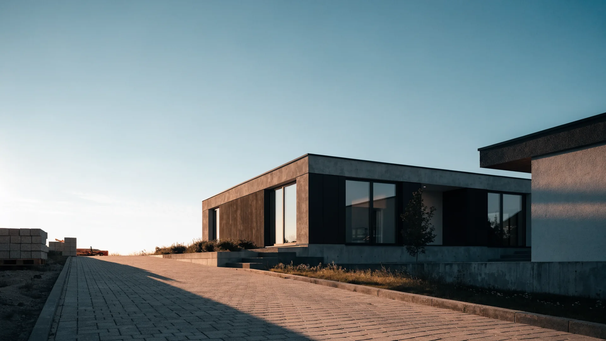

Grundstücksvorbereitung
Freimachen, Ordnen und Vorbereiten der vorgesehenen Arbeitsbereiche.

Leistung · BG Bauland
Funktionale Außenbereiche entstehen durch eine durchdachte Vorbereitung, klare Wegeführung und sauber aufeinander abgestimmte Grundstücksarbeiten.
Leistungsbeschreibung
Außenanlagen verbinden Gebäude, Grundstück und Nutzung zu einem funktionalen Gesamtbild. BG Bauland übernimmt vorbereitende und ausführende Arbeiten, damit Flächen sinnvoll gegliedert und zuverlässig nutzbar werden.
Gelände, Zugänge, Wege und Randbereiche werden gemeinsam betrachtet und passend zum Vorhaben umgesetzt. Dabei stehen klare Abstimmung, robuste Lösungen und eine saubere Übergabe im Mittelpunkt.
Enthaltene Leistungen
Die einzelnen Arbeiten werden auf Nutzung, Bestand und gewünschte Gestaltung des Grundstücks abgestimmt.
Freimachen, Ordnen und Vorbereiten der vorgesehenen Arbeitsbereiche.
Anpassung von Höhen und Flächen für eine funktionale Grundstücksnutzung.
Vorbereitung und Ausführung klar geführter Verbindungen rund um das Gebäude.
Saubere Übergänge, Einfassungen und geordnete Anschlussflächen.
Erd- und Pflasterarbeiten als abgestimmte Basis für den fertigen Außenbereich.
Warum BG Bauland?
Persönliche Abstimmung und aufeinander abgestimmte Arbeitsschritte sorgen für ein stimmiges Gesamtergebnis.

Projekt besprechen
Erzählen Sie uns, wie Sie Ihre Außenflächen nutzen möchten. Wir besprechen die passenden Arbeitsschritte mit Ihnen.